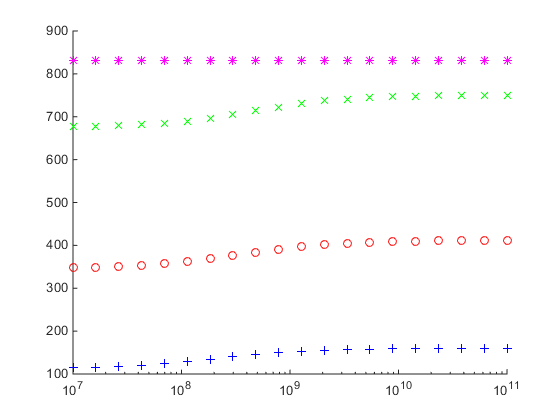

Beam1 - sensitivity study
- multiple runs
jdv 08142016
Contents
setup st7 file info
sys = st7model(); sys.pathname = 'C:\Users\John\Documents\MATLAB\repos\st7api\models'; sys.filename = 'beam1.st7'; sys.scratchpath = 'C:\Temp';
setup nfa info
nfa = NFA(); nfa.name = fullfile(sys.pathname,[sys.filename(1:end-4) '.NFA']); nfa.nmodes = 4; % set number of modes to compute nfa.run = 1;
setup node restraints
bc = boundaryNode(); bc.nodeid = [1 11]; bc.restraint = zeros(length(bc.nodeid),6); % no restraints bc.restraint(1,1:3) = 1; % pinned bc.restraint(11,2:3) = 1; % roller (x kept released) bc.fcase = ones(size(bc.nodeid));
setup spring sensitivity study
Create rotational springs about the y-axis for boundary nodes
pay attention, this section is tricky
springs = spring(); springs.nodeid = 1; % create unit spring force at desired dof Kr = [0 1 0]; % create spring range from 10^2 to 10*12 with 10 increments. start at 5 for % stability % note its a row vector steps = 20; springrange = logspace(7,11,steps)'; % build model array for ii = 1:steps % the class st7model is not a handle subclass. it is just a value % class, like a hard-coded structure. because of this we can create % copies of it beam(ii).sys = sys; % the same goes with the boundaryNodes class beam(ii).bc = bc; % create new instance of nfa class % * this is because nfa subclasses the handle class. handles are % persistent. if you create a copy and change it, the original changes % too. we we need to create a new instance. beam(ii).nfa = NFA(); beam(ii).nfa.name = strcat(fullfile(sys.pathname,sys.filename(1:end-4)), ... '_step',num2str(ii),'.NFA'); beam(ii).nfa.nmodes = 4; beam(ii).nfa.run = 1; % springs % this class is also *not* a subclass of handles. we can use copies. springs.Kr = Kr*springrange(ii); springs.Kfc = ones(size(springs.Kr,1),1); % default to freedom case 1 beam(ii).springs = springs; end
run the shell
tic results = apish(@main,beam); toc
Loading ST7API.DLL... Done. Getting spatial information... Sorting boundary nodes... Done.Done. NFA Analysis... Populating Mode Shapes... Done. Getting spatial information... Sorting boundary nodes... Done.Done. NFA Analysis... Populating Mode Shapes... Done. Getting spatial information... Sorting boundary nodes... Done.Done. NFA Analysis... Populating Mode Shapes... Done. Getting spatial information... Sorting boundary nodes... Done.Done. NFA Analysis... Populating Mode Shapes... Done. Getting spatial information... Sorting boundary nodes... Done.Done. NFA Analysis... Populating Mode Shapes... Done. Getting spatial information... Sorting boundary nodes... Done.Done. NFA Analysis... Populating Mode Shapes... Done. Getting spatial information... Sorting boundary nodes... Done.Done. NFA Analysis... Populating Mode Shapes... Done. Getting spatial information... Sorting boundary nodes... Done.Done. NFA Analysis... Populating Mode Shapes... Done. Getting spatial information... Sorting boundary nodes... Done.Done. NFA Analysis... Populating Mode Shapes... Done. Getting spatial information... Sorting boundary nodes... Done.Done. NFA Analysis... Populating Mode Shapes... Done. Getting spatial information... Sorting boundary nodes... Done.Done. NFA Analysis... Populating Mode Shapes... Done. Getting spatial information... Sorting boundary nodes... Done.Done. NFA Analysis... Populating Mode Shapes... Done. Getting spatial information... Sorting boundary nodes... Done.Done. NFA Analysis... Populating Mode Shapes... Done. Getting spatial information... Sorting boundary nodes... Done.Done. NFA Analysis... Populating Mode Shapes... Done. Getting spatial information... Sorting boundary nodes... Done.Done. NFA Analysis... Populating Mode Shapes... Done. Getting spatial information... Sorting boundary nodes... Done.Done. NFA Analysis... Populating Mode Shapes... Done. Getting spatial information... Sorting boundary nodes... Done.Done. NFA Analysis... Populating Mode Shapes... Done. Getting spatial information... Sorting boundary nodes... Done.Done. NFA Analysis... Populating Mode Shapes... Done. Getting spatial information... Sorting boundary nodes... Done.Done. NFA Analysis... Populating Mode Shapes... Done. Getting spatial information... Sorting boundary nodes... Done.Done. NFA Analysis... Populating Mode Shapes... Done. Elapsed time is 16.013345 seconds.
view nfa info
plotSpringsVsFreq(results) % %% plot displaced shapes % % dof = results(1).dof; % % fh = figure('PaperPositionMode','auto'); % ah = axes(); % % % nfa - mode shape vector % nfa = results(1).nfa; % % mode = 5; % scale = 1; % z = nfa.U(:,3,mode)*scale; % % % % plot undeformed shape % plot(dof.coords(:,1),dof.coords(:,3),... % 'Marker','.',... % 'MarkerEdgeColor','k',... % 'MarkerFaceColo','k'); % % hold(ah,'all') % % % plot mode % plot(dof.coords(:,1),z,... % 'color','b',... % 'Marker','o',... % 'MarkerEdgeColor','b',... % 'MarkerFaceColor','b'); % % % plot boundaries % scatter(dof.bcoords(:,1),dof.bcoords(:,2),... % 'MarkerEdgeColor','m',... % 'MarkerFaceColor','m'); % % hold(ah,'off') % % xlabel(ah,'Beam Length [ft]'); % ylabel(ah,'Modal Amplitude'); % % ylim(ah,[-1.5 1.5]); % % grid(ah,'on'); % grid(ah,'minor'); % % % %